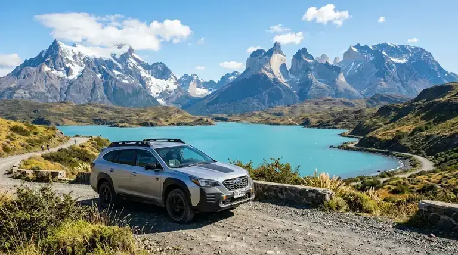

Entrega coordinada: Punta Arenas / Aeropuerto PUQ hacia Natales
Arriendo de Autos en Puerto Natales y Torres del Paine.
Explora los fiordos, glaciares y senderos de la Patagonia austral sin ataduras de horarios. Flota SUV y 4x4 con kilometraje libre garantizado y neumáticos preparados para caminos de ripio.
El arriendo ideal para la zona de Puerto Natales
Movilidad segura y autónoma para recorrer Última Esperanza y el circuito de Torres del Paine.
Kilómetros libres
Sin restricciones de distancia. Recorre Natales, Torres del Paine y todos sus alrededores sin cargos extra.
Flota 4x4 para ripio
Vehículos con despeje reforzado y neumáticos aptos para los caminos de tierra que rodean el Parque Nacional.
Retiro en Punta Arenas
Recoge el auto en Punta Arenas o aeropuerto PUQ y viaja directamente por Ruta 9 hacia Puerto Natales (2,5 hrs de pavimento).
Asistencia local
Nuestro equipo conoce cada camino de la región y te orienta sobre condiciones climáticas, estado de rutas y accesos.
Cruce a Argentina
Desde Puerto Natales puedes cruzar por paso Río Don Guillermo hacia El Calafate y El Chaltén con permiso notarial AGM.
Cotización online
Solicita tu cotización en minutos y recibe propuesta formal por correo con todos los detalles y tarifas en CLP.
Todo al alcance de tu vehículo
Puerto Natales es el punto de partida ideal para las rutas más icónicas de la Patagonia austral.
Torres del Paine
~70 a 110 km desde Natales · Ripio y asfalto
Acceso a Laguna Amarga, Portería Serrano y senderos del Paine a solo 1.5 horas. Flota SUV o 4x4 recomendada.
Seno Última Esperanza
Costanera y alrededores de Puerto Natales
Vistas a glaciares Balmaceda y Serrano, avistamiento de cisnes de cuello negro y excelente gastronomía local.
El Calafate y Glaciar Perito Moreno
Paso Fronterizo Río Don Guillermo (Cerro Castillo)
A solo 3.5 horas de Puerto Natales. Cruce binacional ágil con autorización notarial y seguro Mercosur gestionados por AGM.
Ruta 9 a Punta Arenas
~245 km · Pavimento continuo
Conexión directa entre el Aeropuerto PUQ y Puerto Natales cruzando la estepa patagónica y avistando guanacos en el camino.
Dudas habituales sobre el arriendo en Puerto Natales
check_circle ¿Puedo recoger el auto en Puerto Natales?
El retiro principal se coordina en Punta Arenas o en el Aeropuerto PUQ. Para entrega en Puerto Natales, consúltalo al momento de cotizar ya que depende de disponibilidad y logística.
check_circle ¿Los vehículos son aptos para los caminos hacia Torres del Paine?
Sí. Nuestra flota SUV y 4x4 está preparada para los caminos de ripio que rodean el Parque Nacional Torres del Paine, a aproximadamente 70 km de Puerto Natales.
check_circle ¿El arriendo incluye kilómetros libres?
Sí. Todos los vehículos incluyen kilómetros libres, sin cargos adicionales por distancia. Ideal para recorrer Puerto Natales, Torres del Paine y sus alrededores.
check_circle ¿Puedo devolver el vehículo en un lugar distinto al de retiro?
La devolución estándar es en el mismo punto de retiro. Las devoluciones en puntos distintos (por ejemplo, Punta Arenas → Puerto Natales) se evalúan caso a caso. Consúltalo al cotizar.
Empieza tu ruta por la Patagonia desde Puerto Natales
Solicita tu cotización online y recibe una propuesta formal por correo con disponibilidad, modelos y tarifas en pesos chilenos.